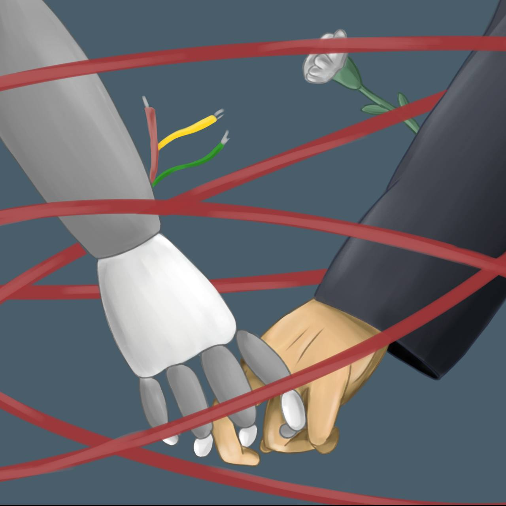
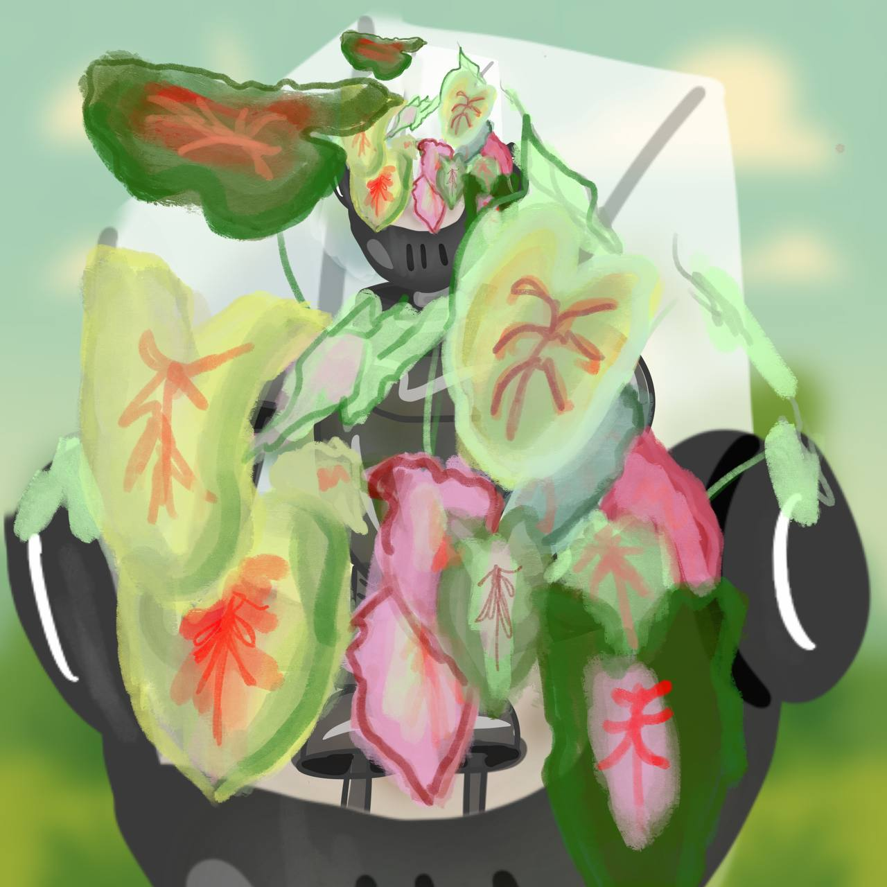
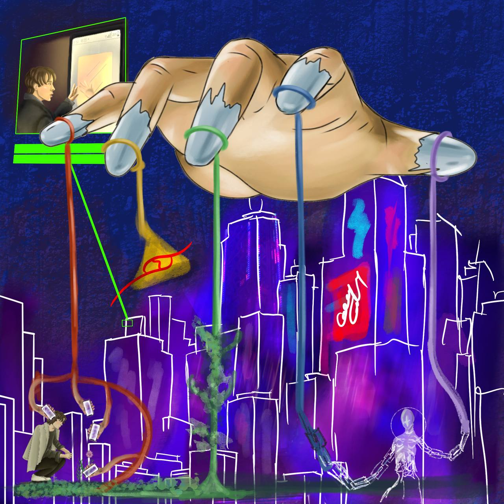

Esta ilustración hace referencia a la conexión actual que tenemos con la tecnología y sus avances. Haciendo especial énfasis en que hemos llegado a un punto donde esa conexión se ha vuelto casi tangible. Tanto así, que comenzamos a romantizar todo esto, olvidando lo realmente importante: la esencia humana.
¿Hilo rojo del destino?
Existe un símbolo muy conocido que representa “la conexión entre personas destinadas a encontrarse”: el hilo rojo. Este símbolo puede aplicarse a distintos ámbitos de la vida: el amor, las relaciones, la protección, el destino; pero es en este último donde toma especial relevancia. El hilo rojo nos recuerda que no podemos escapar de nuestro destino, sino que debemos esperar el momento adecuado.
Aquí surge una pregunta importante:
¿Estamos realmente preparados como humanos para que nuestro destino esté tan profundamente ligado a la tecnología?
¿O esta evolución nos está sobrepasando, al punto de olvidar que las verdaderas conexiones deberían seguir siendo entre seres humanos?

La tecnología no es el fin, nunca lo será, es una herramienta más, tal vez actualmente la innovación no está enfocada en mejorar la vida de la mayoría, sino en mejorar la vida de quienes ya tienen una muy buena vida. Y creo que es ahí donde nos equivocamos.
No solo en que no estamos usando la tecnología para mejorar las condiciones miserables en las que vive mayor parte de la población, si no que no estamos usando la tecnología para mejorar las condiciones miserables que está la naturaleza.
La Tierra, este planeta que habitamos, tiene seres vivos, y se mantienen vivos como resultado de un esfuerzo colectivo de todas las redes y ciclos que la conforman. El humano se inventó la tecnología como un proceso para agilizar la creación de herramientas, sin embargo conforme ha ido pasando el tiempo se ha olvidado que estas herramientas fueron parte de la naturaleza y que todo proceso natural es un ciclo en el cual nada se pierde. Y puede que esto sea confuso, si todo proceso natural es ciclico y estoy afirmando que la tecnología es parte de la naturaleza. No tendría más sentido defender la industria tecnológica, pues no, porque creamos un nuevo proceso, pero este proceso hasta ahora no es ciclico, defiendo la tecnología porque nos podría ayudar a mejorar las condiciones tanto naturales como sociales, pero actualmente hace lo contrario, destruye ciclos naturales y amplifica la brecha de la desigualdad.
Y creo que todo esto sucede porque se nos olvida que la tecnología, es tambien naturaleza, después de muchos procesos y modificaciones, pero es naturaleza. Y si no cuidamos qué hacemos con ella, de donde viene, cada cuanto la reemplazamos y en donde la desechamos, es como usar las semillas de un árbol para hacer una silla. Arruinando los frutos, la sombra, el oxígeno, la madera y por ende la misma silla.
Y espero que esto sea para alguien el inicio de un proceso, así como para otros sea lo necesario para tomar acción.

Reflexión sobre la sociedad y la tecnología. Redes que nos unen, algoritmos que nos polarizan: ¿Quién controla a quién?